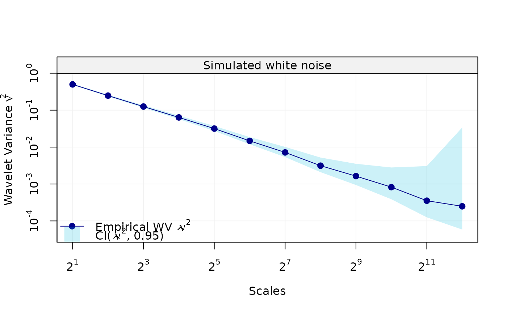
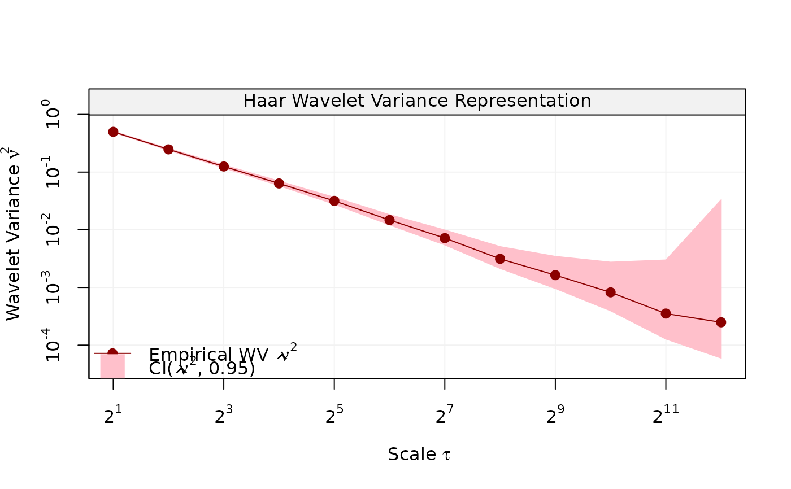

Plot Wavelet Variances
Displays a plot of wavelet variance accounting for CI values and supplied efficiency.
# S3 method for wvar plot(x, units = NULL, xlab = NULL, ylab = NULL, main = NULL, col_wv = NULL, col_ci = NULL, nb_ticks_x = NULL, nb_ticks_y = NULL, legend_position = NULL, ...)
Arguments
| x | A |
|---|---|
| xlab | A title for the x axis. |
| ylab | A title for the y axis. |
| main | An overall title for the plot. |
| col_wv | Color of the wavelet variance line. |
| col_ci | Color of the confidence interval shade. |
| nb_ticks_x | Maximum number of ticks for the x-axis. |
| nb_ticks_y | Maximum number of ticks for the y-axis. |
| legend_position | Position of the legend (use legend_position = NA to remove legend). |
| ... | Additional arguments affecting the plot. |
Value
Plot of wavelet variance and confidence interval for each scale.
Examples
plot(wv, main = "Simulated white noise", xlab = "Scales")plot(wv, units = "sec", legend_position = "topright")plot(wv, col_wv = "darkred", col_ci = "pink")